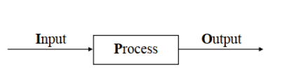
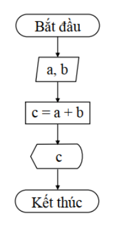
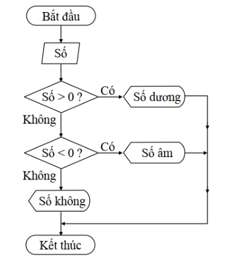

GIỚI THIỆU
1. Tổng quan về ngôn ngữ lập trình
Ngôn ngữ lập trình là công cụ giúp con người giao tiếp với máy tính, biến các ý tưởng và giải pháp thành các chương trình máy tính có thể thực thi được. Việc hiểu rõ các khái niệm cơ bản về ngôn ngữ lập trình là bước đầu tiên quan trọng trên con đường trở thành một lập trình viên chuyên nghiệp.
Mục tiêu học tập
- Hiểu khái niệm về ngôn ngữ lập trình, thuật giải và chương trình
- Nắm vững các bước cơ bản trong quá trình lập trình
- Hiểu và áp dụng được quy trình I-P-O trong lập trình
- Đọc và vẽ được lưu đồ thuật toán đơn giản
- Phân biệt được các loại ngôn ngữ lập trình khác nhau
Tại sao cần học ngôn ngữ lập trình?
Ngôn ngữ lập trình không chỉ là công cụ để viết phần mềm mà còn giúp phát triển tư duy logic, giải quyết vấn đề và sáng tạo. Trong thời đại số hóa, hiểu biết về lập trình trở thành kỹ năng quan trọng trong nhiều lĩnh vực.
NGÔN NGỮ LẬP TRÌNH
1.1 Ngôn ngữ lập trình (Programming Language)
Ngôn ngữ lập trình là một hệ thống các ký hiệu và quy tắc cho phép con người mô tả các thuật toán để máy tính có thể hiểu và thực thi.
Định nghĩa:
Ngôn ngữ lập trình là một ngôn ngữ hình thức gồm một tập hợp các câu lệnh, từ khóa, cú pháp và ngữ nghĩa được sử dụng để tạo ra các chương trình máy tính.
Phân loại ngôn ngữ lập trình:
| Loại ngôn ngữ | Mức độ | Ví dụ | Đặc điểm |
|---|---|---|---|
| Ngôn ngữ máy | Thấp nhất | Mã nhị phân (0 và 1) | Máy tính hiểu trực tiếp, khó đọc và viết |
| Hợp ngữ | Thấp | Assembly | Sử dụng từ viết tắt, gần với ngôn ngữ máy |
| Ngôn ngữ bậc cao | Cao | Java, Python, C++ | Gần với ngôn ngữ tự nhiên, dễ học và sử dụng |
Vai trò của ngôn ngữ lập trình:
- Cầu nối giữa con người và máy tính
- Biểu diễn thuật toán một cách chính xác
- Tự động hóa các tác vụ và quy trình
- Giải quyết vấn đề phức tạp bằng máy tính
- Tạo ra ứng dụng và phần mềm hữu ích
Khám phá các ngôn ngữ lập trình
THUẬT GIẢI (ALGORITHM)
1.1.1 Thuật giải (Algorithm)
Định nghĩa:
Thuật giải hay thuật toán là một tập hợp hữu hạn của các bước xác định rõ ràng, được sắp xếp một cách có logic để giải quyết một vấn đề cụ thể hoặc thực hiện một tác vụ cụ thể.
Các đặc điểm quan trọng của thuật giải:
| Đặc điểm | Mô tả | Ví dụ |
|---|---|---|
| Độ rõ ràng | Mỗi bước cần phải được xác định rõ ràng, không gây hiểu lầm | "Cộng hai số" thay vì "Tính toán" |
| Độc lập | Không phụ thuộc vào ngôn ngữ lập trình cụ thể | Có thể code bằng Java, Python, C++ |
| Đầu vào (Input) | Có 0 hoặc nhiều đầu vào được cung cấp trước | Hai số cần cộng: 5 và 3 |
| Đầu ra (Output) | Có 1 hoặc nhiều đầu ra dựa trên đầu vào | Kết quả: 8 |
| Khả thi | Có thể thực hiện được trong thực tế | Thuật toán phải hoàn thành trong thời gian hữu hạn |
| Hữu hạn | Phải kết thúc sau một số bước hữu hạn | Không được lặp vô hạn |
Ví dụ về thuật giải: Tính tổng hai số
Bước 1: Bắt đầu
Bước 2: Đọc giá trị số thứ nhất (a)
Bước 3: Đọc giá trị số thứ hai (b)
Bước 4: Tính tổng = a + b
Bước 5: Hiển thị kết quả tổng
Bước 6: Kết thúc
Thử nghiệm thuật giải
CHƯƠNG TRÌNH (PROGRAM)
1.1.2 Chương trình (Program)
Định nghĩa:
Chương trình là một tập hợp các chỉ thị mà máy tính có thể hiểu và thực hiện. Các chỉ thị này được viết bằng một ngôn ngữ lập trình cụ thể và thường dựa trên một hoặc nhiều thuật giải để giải quyết một vấn đề hoặc thực hiện một tác vụ cụ thể.
Các thành phần quan trọng của chương trình:
| Thành phần | Mô tả | Ví dụ |
|---|---|---|
| Mã nguồn (Source Code) | Bản văn bản của chương trình, được viết bằng ngôn ngữ lập trình | Tập tin .java, .py, .cpp |
| Biên dịch (Compilation) | Chuyển đổi mã nguồn thành mã máy có thể thực thi | Java → javac → .class file |
| Mã Thực thi (Executable) | Phiên bản của chương trình mà máy tính có thể chạy | .exe (Windows), .app (Mac) |
| Thực thi (Execution) | Quá trình máy tính thực hiện các chỉ thị trong chương trình | Chạy chương trình trên máy tính |
| Gỡ lỗi (Debugging) | Tìm và sửa lỗi trong chương trình | Sử dụng debugger để tìm lỗi |
| Tối ưu hóa (Optimization) | Cải thiện hiệu suất và tài nguyên sử dụng | Giảm thời gian chạy, giảm bộ nhớ |
Ví dụ chương trình Hello World trong các ngôn ngữ khác nhau:
public static void main(String[] args) {
System.out.println("Hello, World!");
}
}
Quá trình từ mã nguồn đến chương trình chạy:
- Viết mã nguồn - Lập trình viên viết code
- Biên dịch - Chuyển đổi sang mã máy (đối với ngôn ngữ biên dịch)
- Liên kết - Kết nối với các thư viện cần thiết
- Tạo file thực thi - Tạo chương trình có thể chạy
- Thực thi - Chạy chương trình trên máy tính
CÁC BƯỚC LẬP TRÌNH
1.2 Các bước lập trình
Lập trình là quá trình giải quyết vấn đề bằng cách sử dụng các thuật toán và viết mã để máy tính có thể thực thi.
| Bước | Mô tả | Công việc cụ thể |
|---|---|---|
| 1. Hiểu vấn đề | Xác định rõ vấn đề cần giải quyết | Phân tích yêu cầu, xác định input/output |
| 2. Phân tích vấn đề | Tìm hiểu chi tiết về vấn đề | Xác định ràng buộc, điều kiện biên |
| 3. Thiết kế thuật toán | Xây dựng giải pháp logic | Vẽ lưu đồ, viết giả mã (pseudocode) |
| 4. Viết mã (Coding) | Chuyển thuật toán thành code | Viết mã nguồn bằng ngôn ngữ lập trình |
| 5. Kiểm tra & Gỡ lỗi | Đảm bảo chương trình hoạt động đúng | Test với nhiều bộ dữ liệu, fix bugs |
| 6. Tối ưu hóa | Cải thiện hiệu suất chương trình | Tối ưu thuật toán, giảm tài nguyên |
| 7. Tài liệu hóa | Viết tài liệu hướng dẫn | Viết comment, tạo user manual |
| 8. Triển khai | Đưa chương trình vào sử dụng | Cài đặt, deploy lên server |
| 9. Bảo trì | Duy trì và cập nhật chương trình | Sửa lỗi, thêm tính năng mới |
Ví dụ minh họa: Phát triển ứng dụng máy tính cầm tay
- Hiểu vấn đề: Cần tạo ứng dụng tính toán cơ bản (cộng, trừ, nhân, chia)
- Phân tích: Input: 2 số và phép toán; Output: Kết quả tính toán
- Thiết kế thuật toán:
- Nhập số thứ nhất
- Nhập số thứ hai
- Nhập phép toán
- Thực hiện tính toán tương ứng
- Hiển thị kết quả
- Viết mã: Code bằng Java/Python/JavaScript
- Kiểm tra: Test với nhiều bộ số và phép toán khác nhau
Thực hành quy trình lập trình
Chọn một bài toán đơn giản và xem quy trình phát triển:
KỸ THUẬT LẬP TRÌNH
1.3 Kỹ thuật lập trình
1.3.1 Quy trình I-P-O (Input-Process-Output)
Định nghĩa:
Quy trình I-P-O là một khái niệm cơ bản trong lập trình và khoa học máy tính, giúp định hình cách máy tính và các chương trình hoạt động. Đây là một quy trình tuần tự, trong đó dữ liệu được nhập vào, sau đó được xử lý theo một số thuật toán hoặc quy trình, và cuối cùng, kết quả được xuất ra.

Thành phần của I-P-O:
| Thành phần | Mô tả | Ví dụ | Nguồn/Đích |
|---|---|---|---|
| Input (Nhập) | Dữ liệu được thu thập để xử lý | Số cần tính căn bậc hai | Bàn phím, file, cảm biến |
| Process (Xử lý) | Xử lý dữ liệu theo thuật toán | Tính căn bậc hai của số | CPU thực hiện tính toán |
| Output (Xuất) | Kết quả sau khi xử lý | Căn bậc hai của số | Màn hình, file, máy in |
Ví dụ: Ứng dụng máy tính cầm tay
Số thứ nhất: 15
Phép toán: +
Số thứ hai: 5
// PROCESS: Xử lý dữ liệu
Thực hiện: 15 + 5 = 20
// OUTPUT: Kết quả xuất ra
Kết quả: 20
Thử nghiệm quy trình I-P-O
Ứng dụng của I-P-O trong thực tế:
- Form đăng ký: Input (thông tin người dùng) → Process (kiểm tra, lưu DB) → Output (thông báo thành công)
- Tìm kiếm: Input (từ khóa) → Process (tìm trong database) → Output (danh sách kết quả)
- Đăng nhập: Input (username/password) → Process (xác thực) → Output (cho phép truy cập hoặc từ chối)
LƯU ĐỒ THUẬT TOÁN
1.3.2 Lưu đồ thuật toán
Định nghĩa:
Lưu đồ thuật toán hay lưu đồ là một biểu đồ biểu diễn trực quan của thuật toán hoặc quy trình. Nó sử dụng các ký hiệu và hình dạng đồ họa khác nhau để biểu diễn các bước, hành động và quyết định, và mô tả luồng thông tin giữa chúng.
Các ký hiệu cơ bản trong lưu đồ:
| Hình dạng | Tên gọi | Ý nghĩa | Ví dụ |
|---|---|---|---|
| ○ | Điểm bắt đầu/kết thúc | Bắt đầu hoặc kết thúc thuật toán | Bắt đầu, Kết thúc |
| ▭ | Xử lý | Thực hiện một phép tính hoặc thao tác | Tính tổng, Đọc dữ liệu |
| ◇ | Quyết định | Kiểm tra điều kiện (có/không) | Số > 0?, a = b? |
| ▱ | Nhập/Xuất | Nhận đầu vào hoặc hiển thị đầu ra | Nhập a, b; In kết quả |
| → | Đường đi | Chỉ hướng thực hiện các bước | Luồng thực thi |
Ví dụ 1: Cộng hai số a và b

2. Nhập giá trị a
3. Nhập giá trị b
4. Tính tổng = a + b
5. Hiển thị tổng
6. Kết thúc
Ví dụ 2: Kiểm tra số âm/dương

2. Nhập số n
3. Kiểm tra: n > 0?
4. Nếu ĐÚNG: Hiển thị "Số dương"
5. Nếu SAI: Kiểm tra: n < 0?
6. Nếu ĐÚNG: Hiển thị "Số âm"
7. Nếu SAI: Hiển thị "Số không"
8. Kết thúc
Lợi ích của lưu đồ thuật toán:
- Trực quan hóa thuật toán phức tạp
- Giúp phân tích và thiết kế chương trình
- Dễ dàng truyền đạt ý tưởng với người khác
- Hỗ trợ phát hiện lỗi logic sớm
- Là tài liệu hướng dẫn chi tiết để code